3 临床预测模型和机器学习
3.1 从医学统计到机器学习
机器学习离医学生/医生很遥远吗？
并不是，其实大家都学过。
医学统计学是一门运用统计学的原理和方法，研究医学科研中有关数据的收集、整理和分析的应用科学。–孙振球，徐勇勇《医学统计学》第4版
机器学习是一门多学科交叉专业，涵盖概率论知识，统计学知识，近似理论知识和复杂算法知识，使用计算机作为工具并致力于真实实时的模拟人类学习方式，并将现有内容进行知识结构划分来有效提高学习效率。–百度百科
结合我们的医学背景讲，机器学习是能够帮我们决策的工具。机器学习中的部分内容我们并不陌生。
医学统计学中都学过多元线性回归、logistic回归、判别分析、聚类分析等，这些都是机器学习的范畴，都属于机器学习的方法。只不过是所处的情境不同，就像一个人可以有多种身份。
在logistic回归中，我们通过多个自变量建立logistic回归方程，由此来判断因变量的状态，比如患病/不患病，肿瘤/非肿瘤，死亡/生存等；在多元线性回归中，我们可以通过多个自变量预测患者的血糖水平。
这些问题在医学统计学中，我们的目的是探寻自变量和因变量的关系，在机器学习中也是一样的用法，不过此时的目的更偏向于预测结果。除此之外，机器学习面向的主要是大样本量的数据，而医学统计学在使用这些方法时，通常是样本量不大的。
除了我们学习过的多元线性回归、logistic回归等，还有一些医学统计学中没有讲到的内容，比如大家经常见到的：随机森林，lasso/ridge/elastic net，支持向量机，knn等，都属于机器学习的内容，都是类似的用法，用多个自变量预测一个因变量。
3.2 机器学习在临床中的应用
机器学习在很多领域应用广泛，在医学领域，大家经常接触的主要是以下几个方面：
- 影像组学
- 生信数据挖掘
- 临床预测模型
- ……
这里面我认为最简单的就是临床预测模型。
另外两个需要额外学习的背景知识太多，对于医学生/医生，尤其是临床医学、中医学等，不亚于从0开始学习一门技能。
今天我们简单介绍下机器学习和临床预测模型的应用。
3.3 机器学习和临床预测模型有什么关系？
首先大家要明确，临床预测模型是什么？
临床预测模型的本质是一种分类方法。通过这种方法，你可以对很多东西进行分类，比如，生和死、有病和没病、肿瘤和非肿瘤、复发和不复发等等。
再直白一点，临床预测模型是一个公式，根据这个公式，你提供一些基本信息，比如年龄、性别、体重、血红蛋白量等（或者某个基因的表达量等），就可以计算出这个人到底是有病还是没病！–《简单易懂：什么是临床预测模型》
你看这个过程是不是和我们上面建立多元线性回归、logistic回归的过程一模一样？也是多个自变量和一个因变量的故事。
所以，临床预测模型的各种实现，都是通过机器学习的方法完成的（你非说是通过统计学的方法也可以，因为二者本来就没有清晰的界限）。这其中比较简单的也是比较常见的是logistic回归、cox回归这些，其他方法，如随机森林、SVM、各种提升算法等，也都逐渐开始使用。
除此之外，大家常见的各种重抽样方法，比如bootstrap、cross validation、holdout(train/test split)等，都是机器学习中常见的基本内容。
各种对变量的处理，比如：中心化、标准化、缺失值插补、样条回归、boxcox、向前/向后/逐步选择、最优子集，等，也都是机器学习的基础内容。
唯一不同且是最重要的一点：临床预测模型更加注重结合临床背景进行解释。
不同于机器学习中变量重要性(随机森林)这种解释，我们更喜欢OR/HR/RR这种解释，自变量每增加一个单位，因变量的危险增加多少、大于60岁的人相比于小于60岁的人，患某病的风险增加多少。
临床预测模型必须不能脱离临床，单纯的数字游戏没有任何意义。
很多讲临床预测模型的课程，涉及的机器学习基本方法太少，指南里的东西大家都知道，满足不了大家发文章的需求。
3.4 当我们谈论临床预测模型时，我们在谈些什么？
这个答案大家应该都很感兴趣：文章！SCI！
临床预测模型本质上应该是为医务人员提供新的诊疗工具、决策工具，开发更为快捷、简便、性价比高的量化工具。比较熟悉并且十分成功的案例：肿瘤的TNM分期。
但是目前来看，主要作用是为大家提供新的发文方式！
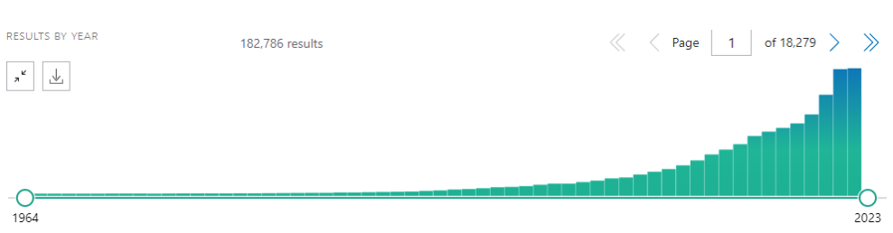
绝大多数临床预测模型类文章都没有实用价值。
3.5 机器学习与临床预测模型需要哪些知识
3.5.1 统计学知识
这块知识对于大家应该不陌生，很好上手。
医学统计学，特别是多元线性回归、logistic回归、Cox回归，需要重点掌握。
除此之外，需要学习一些课本上没有的、但是文献中经常见的统计学方法和指标。
灵活使用，举一反三，不能还停留在t检验、方差分析的阶段，需重点掌握结果的解释。
3.5.2 机器学习基础
这部分内容需要重新学习，但是不需要掌握复杂的原理，数学公式推导等，需要学会：
- 常见的数据预处理方法：Garbage In, Garbage Out
- 对数值型变量的处理
- 中心化、标准化、零方差/近零方差、共线性、分箱、样条变换、等
- 对分类变量的处理：哑变量/独热编码等
- 对因变量的处理：类不平衡
- 缺失值处理：删除、插补
- 对数值型变量的处理
- 特征工程：特征选择
- 超参数调优
存在的问题：处理后不管是单位还是尺度都已变化，怎么解释？
除此之外，还需学习常见的机器学习算法：
- 线性回归
- logistic回归
- lasso/ridge/elastic net
- 决策树
- 集成算法：随机森林、梯度提升树等
- KNN
- SVM
- 和生存分析相关的机器学习算法：正则化Cox、随机生存森林、survival SVM、Coxboost等
- 聚类分析、主成分分分析、因子分析
- ……
对于以上算法，只需学会使用即可，知道哪些算法可以用于什么样的数据、需要哪些数据预处理，结果如何解读等。
3.5.3 统计软件和编程
SPSS，简单方便
R语言，必学！
- 我是医学生，R和python我应该学哪一个？
python，影像组学建议学
Linux，生信数据挖掘建议学
3.5.4 附:如果你要学习生信数据挖掘
下游分析需要掌握的基础知识：
以上所有，外加：
什么是芯片，常用的芯片平台有哪些？ 什么是GEO？表达矩阵，探针id转换？
什么是一代测序，二代测序，三代测序？ 什么是counts，tpm, fpkm？ 什么是TCGA？ TCGA包含哪些数据？ 什么是编码基因？mRNA, lncRNA, miRNA, circRNA等？ 生信常见的各种数据库id, hgnc gene symbol, entrez id, ensembl id等？ 中心法则？ 表观遗传涉及哪些内容？ 什么是甲基化？单核苷酸多态性SNP, 拷贝数变异CVN？
什么是gtf, gff, 参考基因组，基因组注释文件？ 常见的生信数据存放格式?fastp, fastq, bam, sam,
氨基酸缩写？ 人类染色体命名规则？
常见的生信下游分析方法？差异分析，生存分析，富集分析，WGCNA，免疫相关分析，治疗相关分析等，在不同数据类型（转录组、甲基化等）中？
…
上游分析需要的知识也很多。
我的主要学习阵地：哔哩哔哩！解决你80%的问题
3.6 临床预测模型常见发文类型
临床预测模型类文章主要内容是3个部分：
- 模型的建立-各种算法，logistic、决策树等等
- 模型的评价-各种指标和图表，ROC、C-index、校准曲线、决策曲线等等
- 模型的解释：临床预测模型必须不能脱离临床，单纯的数字游戏没有任何意义。
3.6.1 比较简单的
算法不复杂，步骤也不复杂。只需要logistic回归、Cox回归、Lasso即可。
- 诺莫图预测 转移性去势抵抗性前列腺癌经过 Lu177-PSMA 治疗后 的预后
收集一些病人，监测一些指标，建立cox回归，评价模型，解释模型。
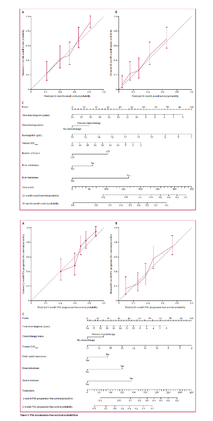 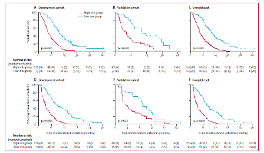
3.6.2 更加典型的案例
训练集+测试集，各来一遍，各种图、指标都用上：nomogram、ROC曲线、校准曲线、决策曲线、K-M生存曲线、C-index等。
- 临床预测模型评估COVID-19患者的风险
收集一些病人，监测一些指标，建立模型，评价模型，解释模型
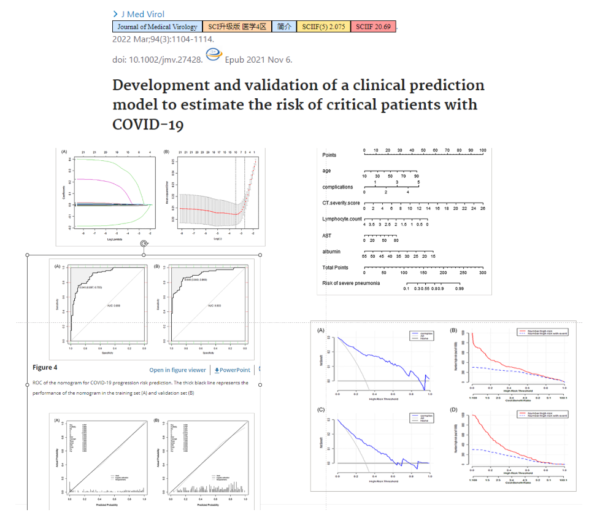
3.6.3 机器学习方法的使用
随机森林、决策树
- 老年人跌倒损伤的预测模型
收集一些病人，监测一些指标，建立随机森林模型，评价模型，解释模型
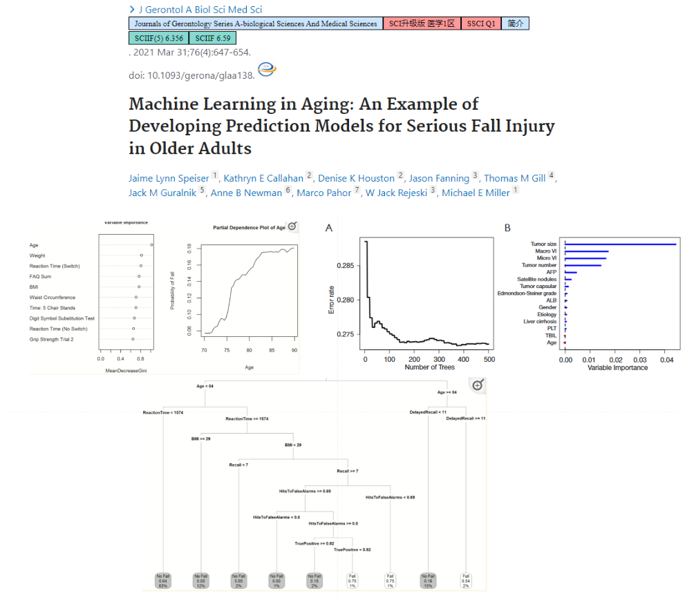
Cross Validated Elastic regularized logistic regression method (cv-Enet), boosting linear regression (glmboost), random forest, and an ensemble model
- 胃切除术后90天死亡率的风险预测模型
收集一些病人，监测一些指标，建立多种模型，评价模型，解释模型
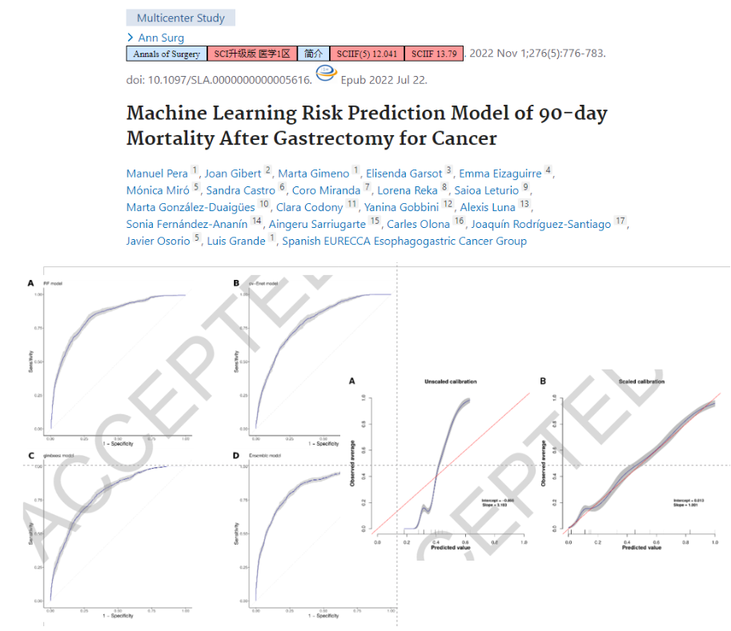
随机生存森林
- 预测肝癌术后早期复发，的机器学习模型
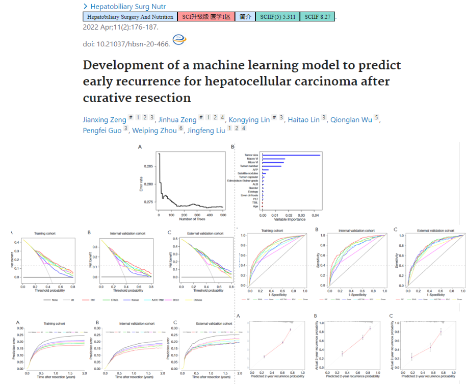
3.7 临床预测模型和生信数据挖掘结合
也可以认为是机器学习和生信挖掘领域的结合，基本思路和常规的临床预测模型差不多，比上面介绍的临床预测模型内容更多，主要是两个方面：
变量的选择
指标的评价
有了生信的加持，可以玩出更多花样！扩展性极大提高！工作量也成倍增加，通常此类文章机器学习只是其中一部分内容。
3.7.1 生信数据挖掘，到底在挖什么？
本质是通过各种方法得到一小撮分子，再通过各种方法证明这些分子很重要！
寻找分子的过程通常也属于变量选择的过程，因为高通量最不缺的就是变量！ 这些分子通常是mRNA/lncRNA/miRNA等。
一些常见的方法：
- 差异分析
- 生存分析
- WGCNA
- 免疫浸润
- hub gene
- 多种方法取交集等
- ……
然后建立模型，这部分内容和临床预测模型差不多，也是建立各种机器学习算法：
- lasso
- cox
- logistic
- 随机森林/随机生存森林
- 决策树
- SVM
- KNN
- 神经网络
- ……
评价模型，和临床预测模型相似的内容：
- 列线图
- 校准曲线
- 决策曲线
- ROC曲线
- 生存曲线
- C-index/AUC
- ……
除此之外，还有一些生信数据挖掘特有的部分：必须和治疗/预后扯上关系
- 和免疫浸润结合
- 和富集分析结合
- 和免疫治疗结合
- 和其他signature/模型/指标比较
- 各种分子分型
- ……
生信数据挖掘文章还有一个特点：紧跟热点
铁死亡、铜死亡、细胞凋亡、内质网应激、肿瘤干性、缺氧、m6A、上皮-间质转化、凝血、血管生成、……
理论上你去GO或者KEGG的官网，所有的分子集合都可以挖一遍；所有病理生理过程涉及的分子也都可以挖一遍（离子通道）。
生信数据挖掘典型花里胡哨图：
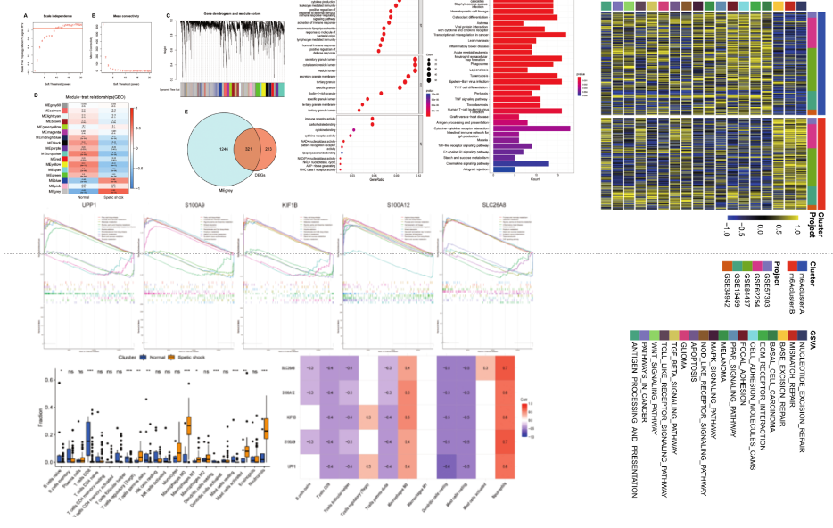
3.7.2 比较简单的
最早期的临床预测模型和生信数据挖掘结合的思路：
- gene signature、基因家族等
通过各种方法找几个基因构建模型（早期，硬筛）
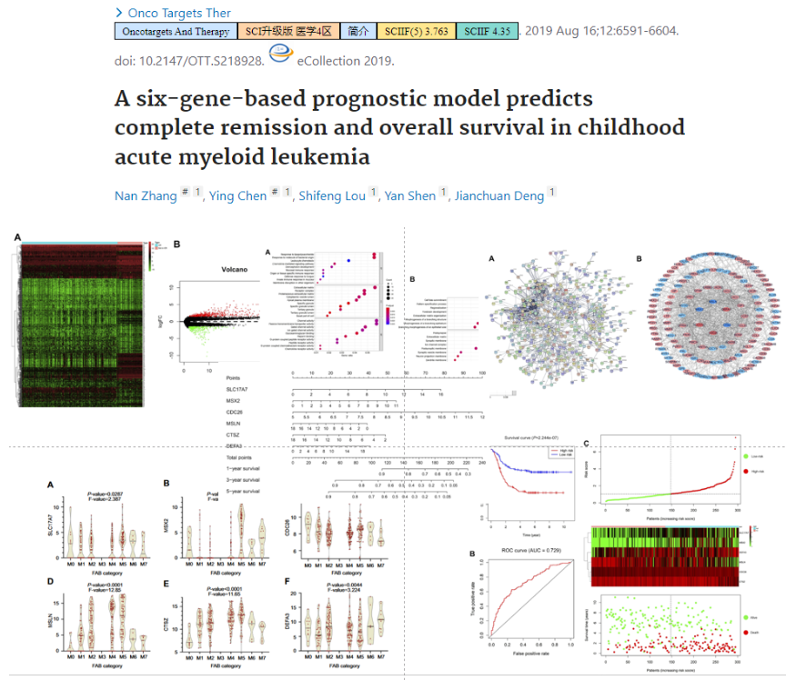
2022年了，这种远古套路依然可以发！因为他加了实验……
- 铁死亡相关的gene signature（某个病理生理过程相关的分子）
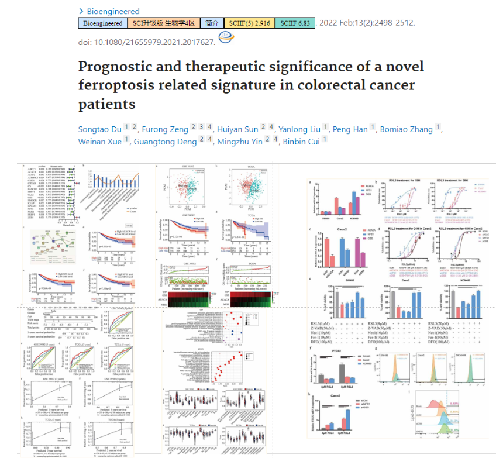
思路不新，也没有实验，但是疾病没人挖掘：儿童败血性休克，机器学习只占一小部分内容，主要是寻找分子以及说明重要性：
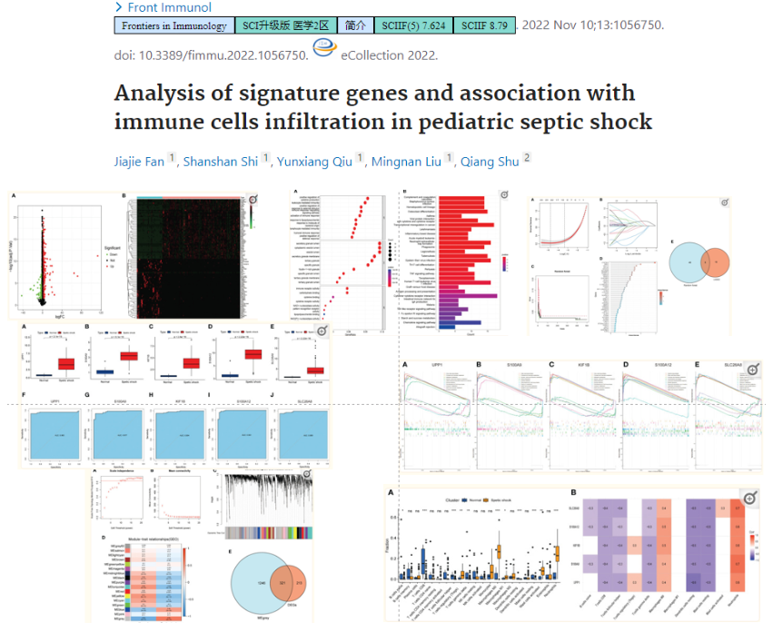
3.7.3 复杂的
超级复杂的工作量、泛癌、单细胞、实验验证
- 细胞衰老和肿瘤微环境：机器学习内容是其中一小部分，但是不可或缺。
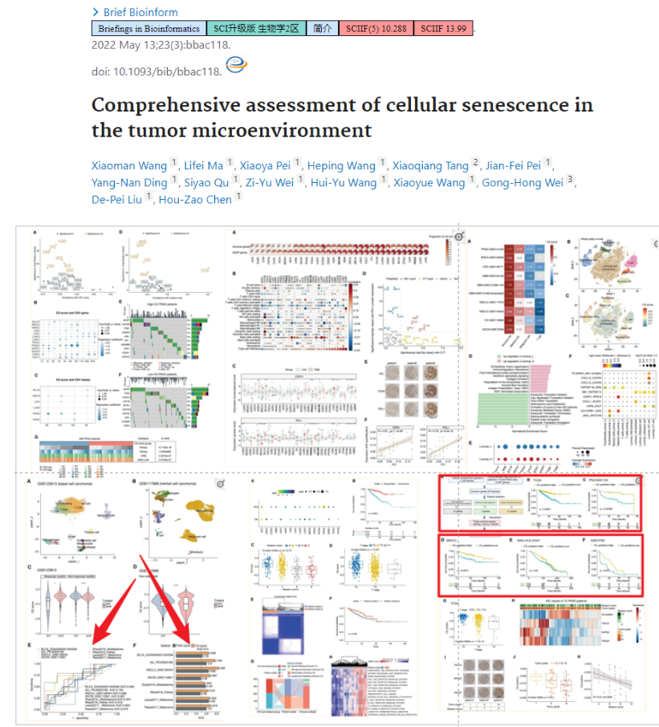
恐怖的工作量：单是机器学习部分就有10种机器学习算法的101种组合(非常火爆的101种组合算法就是来自这篇文章！)！以及和其他已发表的模型进行比较！
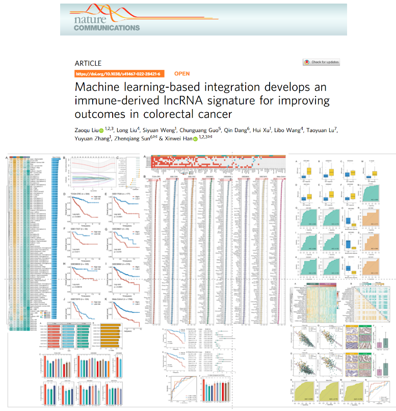
3.8 总结
- 常用的方法就那么几个，只要认真学习，都能学会！
- 对一些细节的处理、结果的解释、好的思路和想法更加重要！用工具解决一个问题是最简单的层面
- 医学中的机器学习更加强调结合医学背景的解释，并不单单是得到更好的模型表现即可，得到模型后结合背景知识进行更加深入的谈论是必不可少的内容，也是和传统机器学习领域最大的不同之处。
感谢大家，祝大家百发百中！